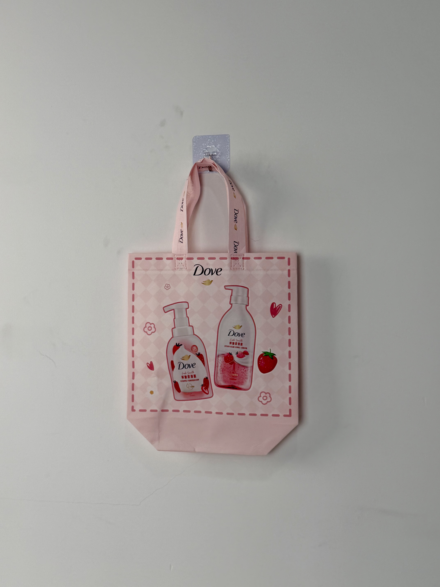

A playful pink promotional tote for Dove's strawberry-scented body wash line, featuring product photography, whimsical illustrations, and branded ribbon handles that turn everyday shopping into brand ambassadorship.

Dove, a brand under Unilever's personal care portfolio, has built one of the most trusted identities in the beauty and personal care industry through its "Real Beauty" platform and product efficacy claims. In China, Dove's body wash category competes in a crowded market where fragrance differentiation and gift-with-purchase promotions are key purchase drivers. The brand's strawberry-scented body wash line targets younger female consumers who respond to playful aesthetics and sensory experiences.
Our promotional items need to feel like gifts our customers actually want to use, not something they'll throw away. The bag should make them happy every time they see it.
The tote project was developed as part of Dove's quarterly gift-with-purchase program in China's major supermarket and e-commerce channels. Previous promotional items had suffered from low reuse rates — customers accepted the free gift but rarely used it afterward. The design brief explicitly required creating a bag that recipients would voluntarily carry in public, extending Dove's brand visibility beyond the point of purchase.
The creative approach treats the tote as an extension of the bathroom shelf aesthetic. Product photography dominates the composition, allowing customers to immediately identify which Dove variant the bag promotes. Surrounding illustrations — strawberries, hearts, flowers — create a whimsical atmosphere that feels personal and Instagram-friendly rather than corporate and sterile.
High-fidelity product renderings create instant brand-product association and shelf-appeal continuity.
Strawberries, hearts, and flowers create a playful atmosphere appealing to target Gen-Z and millennial demographics.
Pink woven tape with Dove repeat logo extends brand presence to the most visible and tactile bag element.
Subtle diamond texture adds visual depth and tactile interest without competing with product imagery.
Promotional totes for FMCG brands operate under tight cost constraints while requiring sufficient quality to encourage reuse. The Dove bag balances these competing demands through efficient specification: lightweight non-woven fabric, four-color gravure printing, and branded ribbon handles that feel premium at controlled cost.
| Parameter | Specification | Test Standard |
|---|---|---|
| Load Capacity | 4 kg | ASTM D5265 |
| Print Resolution | 175 LPI | Internal Protocol |
| Color Fastness | Grade 4-5 | ISO 105-B02 |
| Seam Strength | > 20 N/cm | ASTM D1683 |
The four-stage production workflow optimizes for FMCG promotional timelines: fast setup, efficient printing, and rapid turnaround without compromising visual quality.
90gsm non-woven PP with soft pink masterbatch. Corona treatment for print adhesion. Surface prepared for four-color gravure registration.
CMYK process print for product photography and illustrations. Registration within ±0.5mm. Color proof approved against Dove brand guidelines.
15-micron matte BOPP film for soft-touch finish. Calendered at 90°C for flat adhesion without surface distortion.
Ultrasonic die-cutting with heat-sealed edges. Pink ribbon handles attached with cross-stitch. Final QC for print clarity and handle integrity.
The tote was distributed as a gift-with-purchase across Dove's strawberry body wash SKUs in Carrefour, RT-Mart, and Tmall flagship store channels. Promotion timing aligned with spring festival shopping peaks when gift-set purchases traditionally surge.
Key Insight: Social-media monitoring revealed customers voluntarily photographing the tote for Xiaohongshu and WeChat posts — an organic brand exposure channel that Dove hadn't anticipated. The bag's cute aesthetic made it shareable content, effectively converting promotional spend into user-generated marketing.
The branded ribbon handles proved particularly effective for reuse visibility. Unlike standard tote bags where brand exposure disappears once the bag is set down, the handles remain visible during carrying — ensuring Dove's logo is present in every subway commute, supermarket trip, and coffee run.
Three design decisions differentiate this promotional tote from standard FMCG giveaway bags. Each addresses the challenge of creating genuine customer desire rather than passive acceptance.
Rather than abstract branding, the bag centers the actual product bottles as its visual focus. This approach accomplishes two goals: it makes the bag's promotional purpose immediately clear, and it creates an aspirational bathroom-shelf aesthetic that customers want to carry in public.
The repeating Dove logo on pink ribbon handles ensures brand presence during active use. While the bag body may face away from observers, the handles are always visible to people walking alongside the carrier — maximizing exposure in high-traffic public spaces.
The small heart and flower illustrations scattered around the product imagery create an emotional warmth that transforms corporate branding into personal expression. Customers don't just carry a Dove bag — they carry a bag that makes them smile.
We design and manufacture promotional bags that customers actually want to reuse. From product photography integration to branded handle systems, we turn giveaways into genuine brand assets.